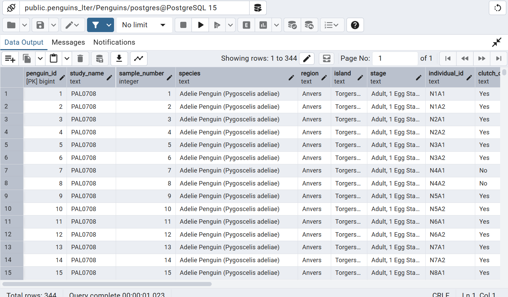
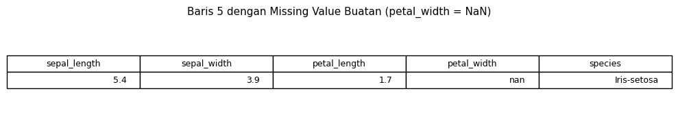
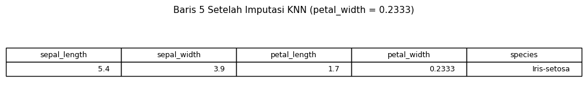
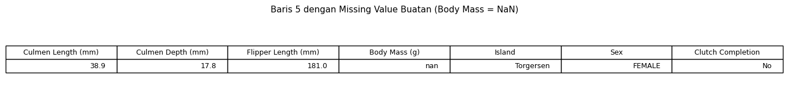
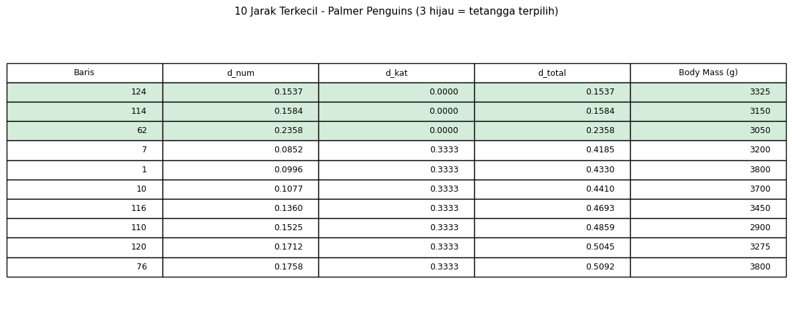
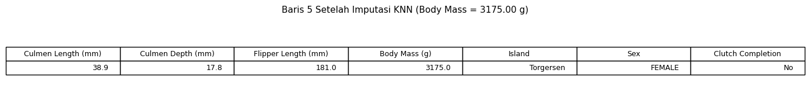

Pertemuan 3 — Data Preparation & KNN Imputation#
Nama |
Aisya |
NIM |
240411100025 |
Mata Kuliah |
Penambangan Data |
Pertemuan |
3 — Data Preparation |
Notebook ini berisi:
Upload & tampilkan gambar dari Orange/PostgreSQL
Load dataset Iris dan Palmer Penguins
Identifikasi missing value dan statistik deskriptif
KNN Imputation pada data numerik (Iris) — perhitungan manual + kode
KNN Imputation pada data campuran (Palmer Penguins) — perhitungan manual + kode
Visualisasi tabel jarak dan hasil imputasi
2. Import Library#
import pandas as pd
import numpy as np
import matplotlib.pyplot as plt
from IPython.display import display, Image, Markdown
print("Library berhasil di-import.")
3. Menampilkan Gambar dari Orange & PostgreSQL#
Gambar-gambar berikut adalah bukti dari workflow Orange Data Mining dan hasil import data ke PostgreSQL.
3.1 Workflow Pengukuran Jarak Dataset Iris di Orange#
Workflow ini menunjukkan alur pengukuran jarak di Orange:
CSV File Import → memuat data Iris
Data Table → menampilkan isi data
Widget jarak: Euclidean, Manhattan, Spearman, Hamming
Distance Matrix → menampilkan matriks jarak
Save Distance Matrix → menyimpan hasil

3.2 Bukti Data CSV ke PostgreSQL#
Dataset Iris telah berhasil dimasukkan ke PostgreSQL menggunakan query:
SELECT * FROM public.iris
Total data: 150 baris.

3.3 Histogram Fitur Iris — Sebelum dan Sesudah Scaling#
Sebelum scaling: skala antar fitur berbeda-beda (misal petal_length 1-7, sepal_width 2-4).
Sesudah scaling (StandardScaler): semua fitur dinormalisasi dengan mean ≈ 0 dan std ≈ 1, sehingga skala setara untuk perhitungan jarak.


3.4 Workflow Pengukuran Jarak Data Campuran Palmer Penguins di Orange#
Workflow Penguins.ows menunjukkan dua sumber data (CSV dan SQL PostgreSQL), masing-masing dialirkan ke 4 widget Distances berbeda:
Euclidean → untuk kolom numerik
Manhattan → untuk kolom numerik (robust terhadap outlier)
Spearman → untuk kolom ordinal
Hamming → untuk kolom nominal & biner

3.5 Koneksi SQL Table PostgreSQL ke Orange (Palmer Penguins)#
Data Palmer Penguins juga tersedia melalui koneksi PostgreSQL live:
Parameter |
Nilai |
|---|---|
Server |
PostgreSQL |
Host |
|
Database |
|
User |
|
Table |
|

4. Load Dataset Iris#
iris = pd.read_csv('IRIS.csv')
print(f"Dataset Iris: {iris.shape[0]} baris, {iris.shape[1]} kolom")
print(f"Kolom: {list(iris.columns)}")
iris.head(10)
5. Identifikasi Missing Value & Statistik Deskriptif — Iris#
# Cek missing value
print("Missing value per kolom:")
print(iris.isnull().sum())
print(f"\nTotal missing value: {iris.isnull().sum().sum()}")
print("\n\u2192 Dataset Iris TIDAK memiliki missing value.")
print(" Oleh karena itu, akan dibuat missing value BUATAN untuk simulasi KNN.")
# Statistik deskriptif Iris
numeric_cols = ['sepal_length', 'sepal_width', 'petal_length', 'petal_width']
print("Statistik Deskriptif - Dataset Iris:")
iris[numeric_cols].describe().T
# Frekuensi tiap kelas
print("Frekuensi tiap species:")
print(iris['species'].value_counts())
print(f"\nTotal: {len(iris)} baris")
6. KNN Imputation — Dataset Iris (Data Numerik)#
Konsep#
Dataset Iris seluruhnya numerik (kecuali species), sehingga jarak dihitung dengan Euclidean Distance.
Langkah:#
Buat missing value buatan pada baris 5, kolom
petal_widthHitung jarak Euclidean ke semua baris lain (tanpa kolom
petal_width)Ambil k=3 tetangga terdekat
Isi missing value = rata-rata
petal_widthdari 3 tetangga (KNN Regression)
Rumus Euclidean Distance:#
Aturan: Kolom yang memiliki missing value tidak diikutkan dalam perhitungan jarak.
# ===== MEMBUAT MISSING VALUE BUATAN =====
target_idx = 5
col_missing = 'petal_width'
nilai_asli_iris = iris.loc[target_idx, col_missing]
print(f"Data asli baris {target_idx}:")
print(iris.loc[[target_idx]])
print(f"\nNilai asli {col_missing}: {nilai_asli_iris}")
# Buat copy dan hilangkan nilai
iris_knn = iris.copy()
iris_knn.loc[target_idx, col_missing] = np.nan
print(f"\nData baris {target_idx} setelah dibuat missing:")
print(iris_knn.loc[[target_idx]])
# Tabel baris yang memiliki missing value
fig, ax = plt.subplots(figsize=(10, 2))
ax.axis('off')
tabel = ax.table(
cellText=iris_knn.loc[[target_idx]].values,
colLabels=iris_knn.columns,
loc='center'
)
tabel.auto_set_font_size(False)
tabel.set_fontsize(9)
tabel.scale(1, 1.5)
plt.title('Baris 5 dengan Missing Value Buatan (petal_width = NaN)', fontsize=11)
plt.tight_layout()
plt.show()
Hasil output:

Perhitungan Jarak Manual (Contoh)#
Karena petal_width kosong, jarak dihitung dari 3 kolom: sepal_length, sepal_width, petal_length.
Baris 5 vs Baris 0:
Baris 5: [5.4, 3.9, 1.7, ?]
Baris 0: [5.1, 3.5, 1.4]
# ===== PERHITUNGAN JARAK KNN - IRIS =====
fitur = ['sepal_length', 'sepal_width', 'petal_length']
# Hitung jarak ke semua baris lain
hasil_jarak_iris = []
for i in range(len(iris_knn)):
if i == target_idx:
continue
d = np.sqrt(((iris_knn.loc[target_idx, fitur] - iris_knn.loc[i, fitur]) ** 2).sum())
hasil_jarak_iris.append((i, d, iris.loc[i, col_missing]))
# Urutkan berdasarkan jarak terkecil
hasil_jarak_iris = sorted(hasil_jarak_iris, key=lambda x: x[1])
# Ambil 3 tetangga terdekat
k = 3
tetangga_iris = hasil_jarak_iris[:k]
# Imputasi dengan rata-rata (KNN Regression)
imputasi_iris = np.mean([x[2] for x in tetangga_iris])
print("=" * 50)
print("IMPUTASI KNN - DATASET IRIS")
print("=" * 50)
print(f"Baris target: {target_idx}")
print(f"Kolom missing: {col_missing}")
print(f"Nilai asli: {nilai_asli_iris}")
print(f"\n3 tetangga terdekat:")
for t in tetangga_iris:
data_row = iris.loc[t[0], fitur].values
print(f" Baris {t[0]}: jarak = {t[1]:.4f}, {col_missing} = {t[2]}, data = {data_row}")
print(f"\nHasil imputasi (rata-rata): {imputasi_iris:.4f}")
print(f"Nilai asli sebelum dihilangkan: {nilai_asli_iris}")
# ===== VISUALISASI: Tabel 10 Jarak Terkecil Iris =====
data_tabel = []
for t in hasil_jarak_iris[:10]:
data_tabel.append([t[0], f"{t[1]:.4f}", t[2]])
fig, ax = plt.subplots(figsize=(8, 4))
ax.axis('off')
tabel = ax.table(
cellText=data_tabel,
colLabels=['Baris', 'Jarak', 'petal_width'],
loc='center'
)
tabel.auto_set_font_size(False)
tabel.set_fontsize(9)
tabel.scale(1, 1.5)
# Warnai 3 baris teratas (tetangga terdekat)
for row in range(1, 4):
for col in range(3):
tabel[row, col].set_facecolor('#d4edda')
plt.title('10 Jarak Terkecil - Dataset Iris (3 hijau = tetangga terpilih)', fontsize=11)
plt.tight_layout()
plt.show()
Hasil output:

# ===== VISUALISASI: Tabel Hasil Imputasi Iris =====
iris_hasil = iris_knn.copy()
iris_hasil.loc[target_idx, 'petal_width'] = round(imputasi_iris, 4)
fig, ax = plt.subplots(figsize=(10, 2))
ax.axis('off')
tabel = ax.table(
cellText=iris_hasil.loc[[target_idx]].values,
colLabels=iris_hasil.columns,
loc='center'
)
tabel.auto_set_font_size(False)
tabel.set_fontsize(9)
tabel.scale(1, 1.5)
plt.title(f'Baris {target_idx} Setelah Imputasi KNN (petal_width = {imputasi_iris:.4f})', fontsize=11)
plt.tight_layout()
plt.show()
Hasil output:

7. Load Dataset Palmer Penguins (Data Campuran)#
penguins = pd.read_csv('penguins_lter.csv')
print(f"Dataset Palmer Penguins: {penguins.shape[0]} baris, {penguins.shape[1]} kolom")
print(f"Kolom: {list(penguins.columns)}")
penguins.head(10)
7.1 Identifikasi Tipe Data per Kolom (Mixed-Type)#
Kolom |
Tipe Data |
Keterangan |
|---|---|---|
|
Numerik |
Panjang paruh atas |
|
Numerik |
Kedalaman paruh |
|
Numerik |
Panjang sirip |
|
Numerik |
Massa tubuh |
|
Numerik |
Isotop nitrogen |
|
Numerik |
Isotop karbon |
|
Ordinal |
Urutan sampel |
|
Ordinal |
Tahap reproduksi |
|
Nominal |
Spesies penguin (3 kategori) |
|
Nominal |
Pulau (3 kategori) |
|
Nominal |
Region (1 kategori) |
|
Nominal |
Tahun riset |
|
Biner |
MALE / FEMALE |
|
Biner |
Yes / No |
8. Identifikasi Missing Value & Statistik Deskriptif — Palmer Penguins#
# Cek missing value Palmer Penguins
print("Missing value per kolom:")
mv = penguins.isnull().sum()
print(mv[mv > 0])
print(f"\nTotal missing value: {penguins.isnull().sum().sum()}")
print(f"\nTotal baris: {len(penguins)}")
print(f"Baris dengan minimal 1 missing: {penguins.isnull().any(axis=1).sum()}")
# Grafik missing value Palmer Penguins
missing_count_penguins = penguins.isnull().sum()
plt.figure(figsize=(14, 5))
missing_count_penguins.plot(kind='bar', color='steelblue')
plt.title('Jumlah Missing Value per Kolom - Palmer Penguins', fontsize=12)
plt.xlabel('Kolom')
plt.ylabel('Jumlah Missing')
plt.xticks(rotation=45, ha='right')
plt.tight_layout()
plt.show()
Hasil output:

# Statistik deskriptif Palmer Penguins - kolom numerik
num_cols_penguins = ['Culmen Length (mm)', 'Culmen Depth (mm)', 'Flipper Length (mm)', 'Body Mass (g)']
print("Statistik Deskriptif - Palmer Penguins (Numerik):")
penguins[num_cols_penguins].describe().T
# Frekuensi tiap spesies
print("Frekuensi tiap species:")
print(penguins['Species'].value_counts())
print(f"\nFrekuensi tiap island:")
print(penguins['Island'].value_counts())
print(f"\nFrekuensi tiap sex:")
print(penguins['Sex'].value_counts())
9. KNN Imputation — Dataset Palmer Penguins (Data Campuran)#
Konsep#
Dataset Palmer Penguins memiliki data campuran (numerik, ordinal, kategorikal, biner). Jarak tidak bisa langsung dihitung dengan Euclidean saja.
Tipe Variabel yang Digunakan:#
Kolom |
Tipe Data |
Keterangan |
|---|---|---|
|
Numerik |
Panjang paruh |
|
Numerik |
Kedalaman paruh |
|
Numerik |
Panjang sirip |
|
Kategorikal |
Torgersen, Biscoe, Dream |
|
Kategorikal |
MALE, FEMALE |
|
Kategorikal |
Yes, No |
|
Numerik (target) |
Kolom yang akan diimputasi |
Langkah Jarak Campuran:#
Numerik → normalisasi: Min-Max Scaling
Jarak numerik: Euclidean Distance
Jarak kategorikal: \(d_{kat} = \frac{P-M}{P}\)
Jarak total: \(d_{total} = d_{num} + d_{kat}\)
# ===== PERSIAPAN DATA - Hapus baris dengan missing di kolom yang akan digunakan =====
kolom_num = ['Culmen Length (mm)', 'Culmen Depth (mm)', 'Flipper Length (mm)', 'Body Mass (g)']
kolom_kat = ['Island', 'Sex', 'Clutch Completion']
kolom_pakai = kolom_num + kolom_kat
# Bersihkan data: buang baris yang punya NaN di kolom yang dipakai
peng_clean = penguins[kolom_pakai].dropna().reset_index(drop=True)
print(f"Data setelah buang missing: {len(peng_clean)} baris")
peng_clean.head(10)
# ===== MEMBUAT MISSING VALUE BUATAN - PENGUINS =====
target_idx_peng = 5
col_missing_peng = 'Body Mass (g)'
nilai_asli_peng = peng_clean.loc[target_idx_peng, col_missing_peng]
print(f"Data asli baris {target_idx_peng}:")
print(peng_clean.loc[[target_idx_peng]])
print(f"\nNilai asli {col_missing_peng}: {nilai_asli_peng}")
peng_knn = peng_clean.copy()
peng_knn.loc[target_idx_peng, col_missing_peng] = np.nan
print(f"\nData baris {target_idx_peng} setelah dibuat missing:")
print(peng_knn.loc[[target_idx_peng]])
# Tabel baris missing Penguins
fig, ax = plt.subplots(figsize=(14, 2))
ax.axis('off')
tabel = ax.table(
cellText=peng_knn.loc[[target_idx_peng]].values,
colLabels=peng_knn.columns,
loc='center'
)
tabel.auto_set_font_size(False)
tabel.set_fontsize(9)
tabel.scale(1, 1.5)
plt.title(f'Baris {target_idx_peng} dengan Missing Value Buatan (Body Mass = NaN)', fontsize=11)
plt.tight_layout()
plt.show()
Hasil output:

Langkah 1 — Normalisasi Numerik (Min-Max)#
Kolom numerik yang digunakan: Culmen Length (mm), Culmen Depth (mm), Flipper Length (mm)
(Kolom Body Mass (g) tidak diikutkan karena merupakan kolom target yang memiliki missing value)
Langkah 2 — Hitung Jarak Kategorikal#
\(P\) = jumlah kolom kategorikal (3: Island, Sex, Clutch Completion)
\(M\) = jumlah kolom yang nilainya sama
Langkah 3 — Hitung Jarak Total#
# ===== PERHITUNGAN JARAK KNN - PENGUINS (DATA CAMPURAN) =====
# Kolom numerik untuk hitung jarak (tanpa Body Mass karena itu target)
fitur_num = ['Culmen Length (mm)', 'Culmen Depth (mm)', 'Flipper Length (mm)']
fitur_kat = ['Island', 'Sex', 'Clutch Completion']
# Min-Max normalisasi
mins = peng_knn[fitur_num].min()
maxs = peng_knn[fitur_num].max()
ranges = maxs - mins
def minmax_norm(val, col):
return (val - mins[col]) / ranges[col]
print("Min-Max per kolom numerik:")
for col in fitur_num:
val_target = peng_knn.loc[target_idx_peng, col]
norm_val = minmax_norm(val_target, col)
print(f" {col}: min={mins[col]}, max={maxs[col]}, baris target={val_target} -> normalized={norm_val:.4f}")
# Hitung jarak campuran
hasil_jarak_peng = []
for i in range(len(peng_knn)):
if i == target_idx_peng:
continue
# Jarak numerik (Euclidean setelah normalisasi min-max)
d_num = np.sqrt(sum(
(minmax_norm(peng_knn.loc[target_idx_peng, c], c) - minmax_norm(peng_knn.loc[i, c], c))**2
for c in fitur_num
))
# Jarak kategorikal
P = len(fitur_kat)
M = sum(peng_knn.loc[target_idx_peng, c] == peng_knn.loc[i, c] for c in fitur_kat)
d_kat = (P - M) / P
# Jarak total
d_total = d_num + d_kat
bm = peng_knn.loc[i, col_missing_peng]
if pd.isna(bm):
continue
hasil_jarak_peng.append((i, d_total, d_num, d_kat, bm))
# Urutkan berdasarkan jarak terkecil
hasil_jarak_peng = sorted(hasil_jarak_peng, key=lambda x: x[1])
# 3 tetangga terdekat
k = 3
tetangga_peng = hasil_jarak_peng[:k]
imputasi_peng = np.mean([x[4] for x in tetangga_peng])
print("\n" + "=" * 65)
print("IMPUTASI KNN - DATASET PALMER PENGUINS (DATA CAMPURAN)")
print("=" * 65)
print(f"Baris target: {target_idx_peng}")
print(f"Kolom missing: {col_missing_peng}")
print(f"Nilai asli: {nilai_asli_peng}")
print(f"\n3 tetangga terdekat:")
for t in tetangga_peng:
r = peng_knn.loc[t[0]]
print(f" Baris {t[0]}: d_total={t[1]:.4f} (d_num={t[2]:.4f}, d_kat={t[3]:.4f}), Body Mass={t[4]}")
print(f" CL={r['Culmen Length (mm)']}, CD={r['Culmen Depth (mm)']}, FL={r['Flipper Length (mm)']}, "
f"Island={r['Island']}, Sex={r['Sex']}, CC={r['Clutch Completion']}")
print(f"\nHasil imputasi (rata-rata): {imputasi_peng:.2f}")
print(f"Nilai asli sebelum dihilangkan: {nilai_asli_peng}")
# ===== VISUALISASI: Tabel 10 Jarak Terkecil Penguins =====
data_tabel_peng = []
for t in hasil_jarak_peng[:10]:
data_tabel_peng.append([
t[0],
f"{t[2]:.4f}",
f"{t[3]:.4f}",
f"{t[1]:.4f}",
int(t[4])
])
fig, ax = plt.subplots(figsize=(12, 5))
ax.axis('off')
tabel = ax.table(
cellText=data_tabel_peng,
colLabels=['Baris', 'd_num', 'd_kat', 'd_total', 'Body Mass (g)'],
loc='center'
)
tabel.auto_set_font_size(False)
tabel.set_fontsize(9)
tabel.scale(1, 1.5)
for row in range(1, 4):
for col in range(5):
tabel[row, col].set_facecolor('#d4edda')
plt.title('10 Jarak Terkecil - Palmer Penguins (3 hijau = tetangga terpilih)', fontsize=11)
plt.tight_layout()
plt.show()
Hasil output:

# ===== VISUALISASI: Tabel Hasil Imputasi Penguins =====
peng_hasil = peng_knn.copy()
peng_hasil.loc[target_idx_peng, col_missing_peng] = round(imputasi_peng, 2)
fig, ax = plt.subplots(figsize=(14, 2))
ax.axis('off')
tabel = ax.table(
cellText=peng_hasil.loc[[target_idx_peng]].values,
colLabels=peng_hasil.columns,
loc='center'
)
tabel.auto_set_font_size(False)
tabel.set_fontsize(9)
tabel.scale(1, 1.5)
plt.title(f'Baris {target_idx_peng} Setelah Imputasi KNN (Body Mass = {imputasi_peng:.2f} g)', fontsize=11)
plt.tight_layout()
plt.show()
Hasil output:

10. Ringkasan#
Untuk Data Numerik (Iris)#
Cek missing value → tidak ada → buat missing value buatan
Tentukan baris target dan kolom yang kosong
Hitung jarak Euclidean ke semua baris lain (tanpa kolom yang kosong)
Urutkan jarak dari terkecil
Ambil k=3 tetangga terdekat
Isi missing value = rata-rata nilai kolom target dari 3 tetangga
Untuk Data Campuran (Palmer Penguins)#
Cek missing value → terdapat beberapa missing → bersihkan dulu, lalu buat missing buatan
Tentukan tipe setiap kolom: numerik atau kategorikal
Normalisasi kolom numerik: Min-Max Scaling
Hitung jarak numerik: Euclidean
Hitung jarak kategorikal: \((P-M)/P\)
Jumlahkan: \(d_{total} = d_{num} + d_{kat}\)
Urutkan jarak dari terkecil
Ambil k=3 tetangga terdekat
Isi missing value = rata-rata dari 3 tetangga (KNN Regression)
Hasil Imputasi#
Dataset |
Kolom |
Nilai Asli |
Hasil Imputasi |
|---|---|---|---|
Iris |
petal_width |
0.4 |
lihat output di atas |
Palmer Penguins |
Body Mass (g) |
lihat output |
lihat output di atas |